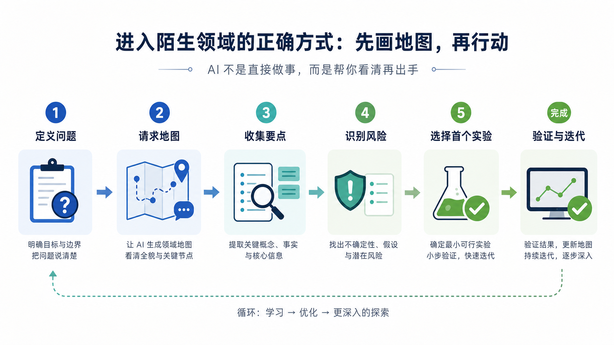
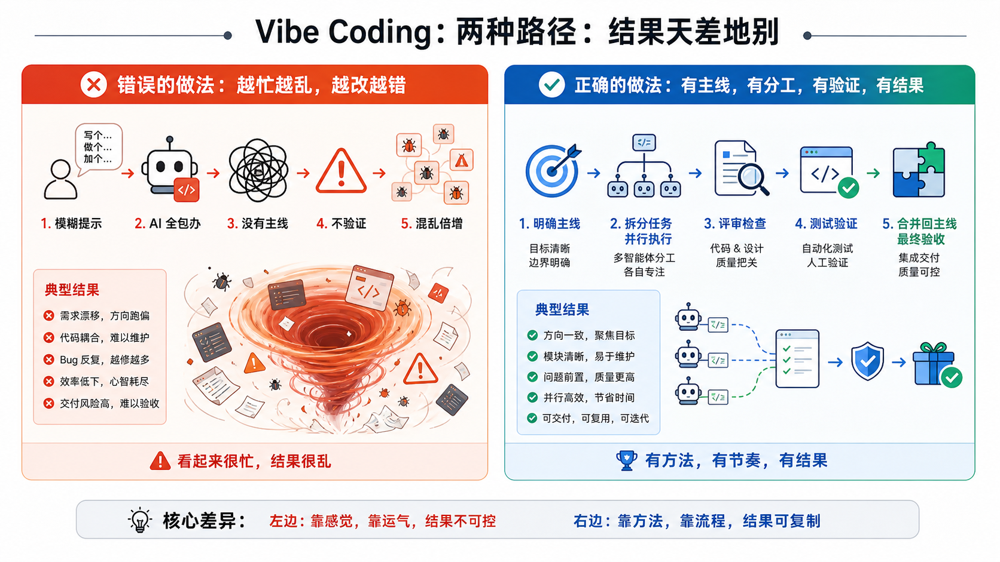

Vibe 方法论：如何利用 AI 快速高效解决真实问题
这不是一条“十分钟用 AI 做网页”的爽片，而是一场真实项目复盘式技术分享。主题是：如何把 AI 组织成一个能调研、设计、执行、反驳、验收的高吞吐问题解决系统。

最近我反复看到一个问题：难点在于把它组织进一套能验证、能复盘的工作流。
1. 先把话说直：AI 不是来替你省掉判断的
我现在更愿意把 Vibe Coding 理解成一个工作台，而不是一种玄学状态。
它真正有价值的地方，不是让模型连续生成很多内容，而是把一个真实问题拆成几段：先看清楚，再做一个最小版本，再找另一个视角挑毛病，最后用验收把结果收住。
worker 代码写了，但任务有没有真的消费？
2. 第一步不是开写，而是先要地图
遇到陌生领域，最容易犯的错是直接让 AI 开干。
我做 Script Killer 时也有这个冲动：上传视频、自动拉片、提炼结构、生成脚本、导出分镜，最好还能自动剪片。需求一大，模型很容易给出一套看起来完整、但根本做不完的系统设计。
更可靠的做法是先让它画地图：这个领域通常怎么拆，最小版本应该切在哪里，哪些能力现在看起来诱人但可以后置。
我想做一个从原始资料到可发布内容的工具。
先不要写代码。
请先帮我画领域地图：
1. 这个问题通常拆成哪些模块；
2. 最小可用版本应该包含什么；
3. 哪些能力可以后置；
4. 最大风险是什么；
5. first beta 应该怎么切。3. 一次真实教训：fake client 为什么会骗过测试

有一次链路看起来已经完成了：页面能点，接口有返回，测试也是绿的。
但反方模型追问了一个问题：这个测试有没有绕过真实上传、真实任务触发和真实产物写入？如果 fake client 自己制造输入、自己验证输出，它只能证明测试会过，不能证明用户链路能跑。
我回头拆验收链路，发现问题不在“代码有没有写”，而在“验证对象错了”。
原来的测试验证的是模拟对象之间的配合；真正需要验证的是：文件是否进入 Storage，任务是否由真实入口触发，worker 是否产出可检查的结果，失败时有没有日志能定位。
修法也不复杂：把 fake client 的成功路径降级成单元测试，再补一条最小真实链路测试，最后把验收标准从“测试全绿”改成“用户路径产生了可复查产物”。
4. 主线定不住，并行只会放大混乱
AI 很勤快。问题是，它的勤快经常没有方向。
如果主线不清楚，你开十个线程，只是把混乱复制十份。主线清楚以后，并行才有意义：一个线程探索未知领域，一个线程做 first beta，一个线程挑问题，一个线程修 bug，一个线程整理验收标准。
我现在会用一个很简单的顺序约束它：先收敛主线，再 fork 支线，最后回到主线验收。
5. Prompt 不是咒语，是把需求讲清楚

模型越来越强以后，很多玄学 prompt 确实没那么重要了。但需求表达更重要了。
好的 prompt 不靠身份扮演堆气势，而是把背景、目标、边界、输入材料、输出格式、验收标准讲清楚。
我更常用的是这种写法：
请站在反方 reviewer 视角审查这个方案。
不要夸。
找出最可能失败的 5 个原因。
每个原因都要给证据、风险等级和修正建议。
请区分：必须现在修、下个版本修、未来再说。6. 这套方法什么时候会失效
它不是万能的。
如果你没有真实问题，只是在追求“让 AI 多写一点”，这套流程会变成自我感动。
如果你没有验收标准，多模型互相评审也会变成互相表演。
如果你不愿意回到项目里看文件、跑测试、查日志，模型再会说也救不了真实链路。
7. 可以直接拿走的检查清单
下次你要用 AI 做一个真实项目，可以先按这几个问题往下问：
- 目标：我要解决的真实问题是什么？
- 地图：这个领域通常怎么拆？最小版本是哪一刀？
- 上下文：模型需要哪些文件、日志、代码、材料和约束？
- 反驳：如果让另一个模型挑刺，它最可能指出什么？
- 验收：什么结果能证明这件事真的完成了？
- 收束：哪些建议现在不做，只放进 backlog？
附：原稿中保留的可复用片段
如何利用 AI 快速高效地解决真实问题。先收敛主线，再 fork 支线，最后回到主线验收。请你站在反方 reviewer 视角审查这个方案。
不要夸。
请找出它最可能失败的 5 个原因。
每个原因都要给证据、风险等级和修正建议。
请区分：必须现在修、下个版本修、未来再说。请把当前任务拆成：
1. 主线任务；
2. 必要支线；
3. 可后置支线。
如果某个建议不直接服务本次目标，请放入 future backlog，不要现在执行。这是当前主线目标、最近改动、错误日志和已验证事实。
请只定位这个 bug。
不要重构无关模块。
输出根因、证据、最小修复建议和验证方式。这是当前 beta 已完成范围。
请从未来 3 个月演进角度评估架构风险。
不要建议现在重写。
请区分：必须现在改、下个版本改、未来再说。计划已经确认。
在不违反边界的前提下，请连续执行到验收完成。
中途不要因为常规下一步来问我。
只有遇到权限风险、数据风险、不可逆操作或计划外范围时再停下来。
完成后给我结果、验证证据和剩余风险。充分输入，减少返工。